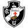
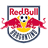
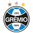

BAHIA
Esporte Clube Bahia,fundado em 1931, como títulos conta com seus 2 campeonato brasileiro,
as cores do clube são o azul, o branco e o vermelho, e seu mascote é o "Esquadrão de Aço". O Bahia manda seus jogos na Arena Fonte Nova,
localizada em Salvador, a capital do estado Bahia.

FORTALEZA
Fortaleza Esporte Clube, fundado em 1918,suas cores são o vermelho, o azul e o branco, e seu mascote é o "Leão do Pici",
como títulos o Fortaleza Esporte Clube nao possui nenhum título do campeonato brasileiro.

VITÓRIA
Esporte Clube Vitória , fundado em 1899 é um dos clubes mais antigos do Brasil,
As cores do clube são o vermelho e o preto, e seu mascote é o "Leão da Barra",
e como títulos o Vitória conota com seus 2 títulos do campeonato brasileiro.
ATLÉTICO-MG
O Clube Atlético Mineiro, comumente conhecido como "Galo", fundado em 25 de março de 1908,
Atlético-MG possui uma história rica e uma base de torcedores fervorosos,
e como títulos conta com seus 3 campeonatos brasileiros.

FLAMENGO
O Clube de Regatas do Flamengo, Fundado em 1895 na cidade do Rio de Janeiro, conhecido também pelas suas principais cores que são o vermelho e o preto,
como títulos o Flamengo possui seus 8 campeonatos brasileiros.

PALMEIRAS
O Palmeiras é um dos clubes paulistas mais tradicionais e bem-sucedidos do Brasil ,
fundado em 1914, é o atual campeão do campeonato brasileiro, e ao todo possui seus 12 titulos do brasileirão.

SÃO PAULO
O São Paulo Futebol Clube é um dos clubes mais e vitoriosos do Brasil, com uma história repleta de conquistas.
Fundado em 1930 na cidade de São Paulo,
São Paulo conta com seus 6 títulos do brasileirão.
FLUMINENSE
Fluminense Football Club,fundado em 1902,suas cores são o verde, o branco e o grená.
O Fluminense manda seus jogos no Estádio do Maracanã,
como títulos Fluminense conta com seus 4 títulos do brasileirão.

CORINTHIAS
O Sport Club Corinthians Paulista,fundado em 1910 na cidade de São Paulo,Corinthias é um time de grande importância e relevância no futebol brasileiro
e mundial,
e como títulos Corinthias conta com seus 7 títulos do brasileirão.

BOTAFOGO
Botafogo de Futebol e Regatas,fundado em 1904,Botafogo manda seus jogos no Estádio Nilton Santos(RJ),
suas cores sao o preto e o branco, seu mascote e o "Biriba"
, como títulos o Botafogo conta com seus 2 títulos do campeonato brasileiro.
CRUZEIRO
Cruzeiro Esporte Clube,conta com seus 4 títulos do brasileirão, possui como suas principais cores o azul e o branco, e seu mascote é a Raposa.
O Cruzeiro foi fundado em 1921 na cidade de Belo Horizonte,Minas Gerais.

VASCO
O Clube de Regatas Vasco da Gama, suas cores são o preto e o branco,
Fundado em 1988 na cidade de São Januário(RJ),
e conta com seus 4 títulos do campeonato brasileiro.

RED BULL BRAGANTINO
Red Bull Bragantino, fundado em 1928 na cidade de Bragança Paulista(SP),
tem como suas cores principais o vermelho, o branco e o preto,
Red Bull Bragantino ainda nao possui nenhum título do campeonato brasileiro.

ATLETICO-GO
Atlético Clube Goianiense,Fundado em 1937,Atlético Goianiense manda seus jogos no Estádio Antônio Accioly. Suas cores são o preto, o branco e o vermelho, e seu mascote é o "Dragão", uma referência ao apelido do clube.
Como títulos o Atlético-GO nao possui nenhum título do campeonato brasileiro.

CUIABA
Cuiabá Esporte Clube,fundado em 2001,suas cores são o verde,o branco e o dourado,
e seu mascote é o "Dourado". O Cuiabá manda seus jogos na Arena Pantanal, localizada em Cuiabá, a capital do Estado do Mato Grosso.Como títulos o Cuiabá Esporte Clube ainda não conseguiu conquistar seu título do campeonato brasileiro.

ATHLETICO-PR
lube Athlético Paranaense, Fundado em 1924,seu Estádio Joaquim Américo, popularmente conhecido como Arena da Baixada.Como títulos o Athletico-PR possui 1 título do campeonato brasileiro.

GREMIO
Grêmio Foot-Ball Porto Alegrense,Fundado em 1903,Grêmio manda seus jogos na "Arena do Grêmio".Suas cores são o azul, o preto e o branco,
Como títulos o Gremio possui 2 títulos do campeonato brasileiro.

INTERNACIONAL
Sport Club Internacional, Fundado em 1909,
suas cores sao vermelho e o branco,uma das principais caracteristicas do Internacional e seu mascoteo "Saci-Pererê".Como títulos,Internacional possui suas 3 taças do campeonato brasileiro.

JUVENTUDE
O Esporte Clube Juventude, localizado na região Sul do Brasil,fundado em 1913,juventude manda seus jogos no Estádio Alfredo Jaconi,suas cores são o verde e o branco,como títulos o Juventude ainda esta em busca da sua primeira taça do campeonato brasileiro.